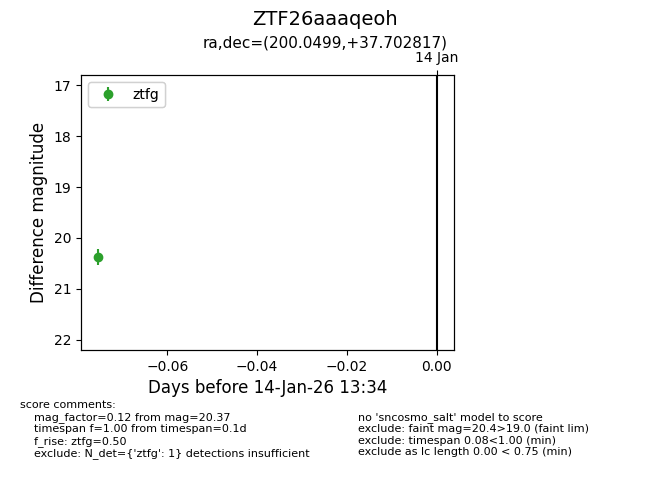
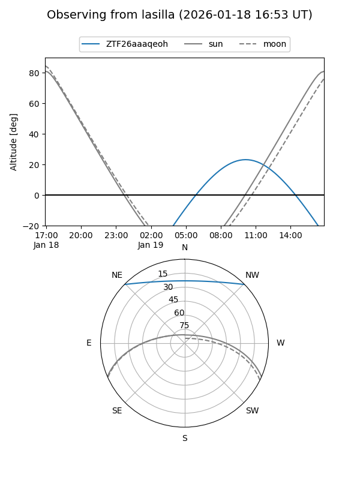
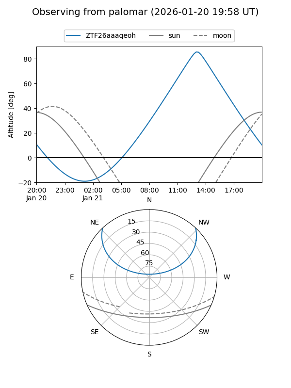
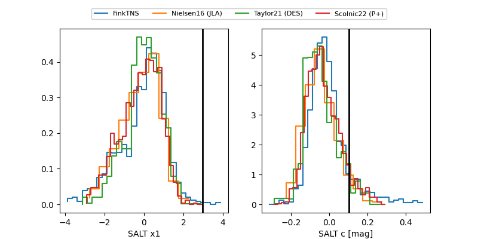

ZTF26aaaqeoh
Target ZTF26aaaqeoh at 2026-01-18 11:05
Aliases and brokers:
FINK: link
Lasair: link
ALeRCE: link
alt names
ZTF26aaaqeoh (ztf,fink_ztf)
Coordinates:
equatorial (ra, dec) = 200.0499,+37.70282
equatorial (HMS+DMS) = 13:20:11.97,+37:42:10.14
galactic (l, b) = (94.9448,+77.81719)
Flags:
Photometry:
last ztfg=20.48
2 ztfg detections
Lightcurve

Visibility


Additional plots
